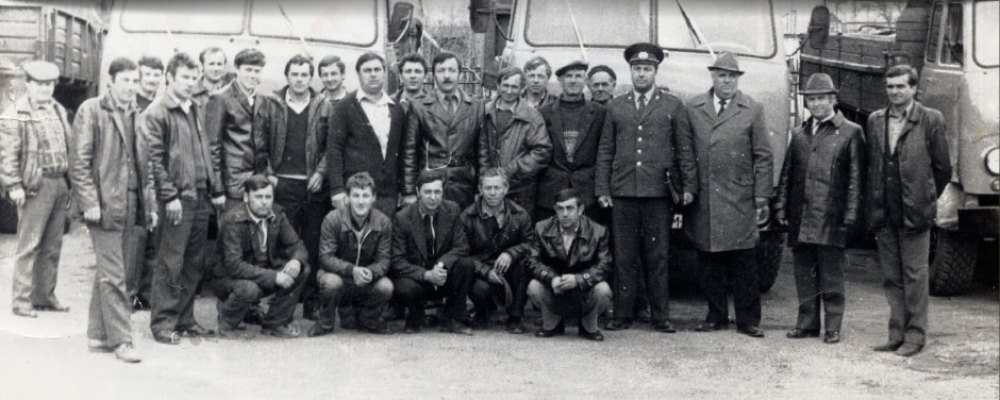

GESCHICHTE
Peretschyn Forstchemisches Kombinat – Chronolgie der Entwicklung
PreviousNext


1914
VAT “Peretschyn Forstchemisches Kombinat“ wurde gegründet
Das Kombinat war im Besitz der österreich-ungarischen Firma
BANTLIN, welche hauptsächlich Holzkohle, Essigsäure und andere
Produkte aus Buche hergestellt hat.
Die Jahre1920 bis 1939
Zwischen 1922 und 1923 wurden einige Modernisierungs-Projekte durchgeführt
Zum Beispiel, Umstellung der kompletten Anlagen auf
elektrischen Betrieb. Dadurch konnte die Kapazität des
gesamten Kombinats wesentlich erhöht werden und markierte den
Beginn einer goldenen Ära. Die Weltwirtschaftskrise 1929 hat
allerdings dem Peretschyn Forstchemisches Kombinat einen
großen Schaden zugefügt und zwang das Unternehmen dazu,
Mitarbeiter zu entlassen. Temporär musste das Kombinat sogar
komplett stillgelegt werden.
Nach dem zweiten Weltkrieg
Die Montage neuer Anlagen und die Reorganisation der
Produktionsabläufe haben nach Kriegsende zu einer schnellen
Erneuerung des Peretschyn Forstchemisches Kombinats geführt.
1957 begann man mit der Herstellung von
Harnstoff-Formaldehydharz. 1962 wurde mit dem Betrieb zur
kontinuierlichen Gaserzeugung aus Kohle begonnen, als zweiter
Standort in der UdSSR.
Die Jahre 1970 bis 1989
Die Anlagen zur Gaserzeugung aus Kohle sowie der Dampfheizraum
wurden installiert und in Betrieb genommen.
Die wichtigsten Ereignisse in diesem Zeitraum waren:
Umstellung der gesamten Anlagen auf Gas, Einführung des Harnstoffharzes und der Bau einer neuen
Produktionsabteilung von Ethylacetat, welche mit modernsten
Technologien ausgerüstet wurde.
Die Jahre 1990 bis 1997
Die Jahre 1993 bis 1997 stellen die schwerste Periode in der Geschichte des Kombinats dar.
Die instabile Situation in der ehemaligen UdSSR hat die
ukrainische Wirtschaft stark beinflusst, welche innerhalb von zwei Wochen zu einer tiefen Rezession
geführt hat. Kein einziges Unternehmen konnte sich der
Verzögerung des Wirtschaftswachstums entziehen, auch nicht das
Peretschyn Forstchemisches Kombinat. Zu der Zeit, als die
Produktion des Ethylacetats und der Holzkohle stark gefallen
ist, ist die Produktion von Harnstoff-Formaldehydharz total
zurückgegangen.

1998
Dieses Jahr zeichnet sich durch das Auftreten des jetzigen
Eigentümers des Peretschyn Forstchemisches Kombinats, der
“POLYPROM Gruppe” GmbH, aus.
Im Verlauf der Privatisierung hat die “Polyprom Gruppe” GmbH
ein Aktienkontrollpaket des Unternehmens erworben und wurde
damit sein Haupteigentümer. Es wurden neue Ideen und
Geschäftsfelder entwickelt, welche das Peretschyn
Forstchemisches Kombinat auf das Niveau gebracht haben,
welches wir heute beobachten können.
2004
Es wurde eine zweite vertikale Retorte in Betrieb genommen.
Diese hat unsere Kapazitäten in der Herstellung von Holzkohle
auf bis zu 25 000 Tonnen pro Jahr erhöht.
2008
Das Werk wurde gemäß ISO 9001: 2000 zertifiziert.